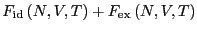
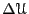

We recall that the free energy of the canonical ensemble, termed the
Helmholtz free energy and denoted in F&S, is defined by
| (201) | |||
| (202) | |||
| (203) | |||
|  | (204) |
Here, is the ``ideal gas'' free energy, and is the ``excess'' free energy.
The chemical potential is defined as the change in free energy upon
addition of a particle:
| (205) |
For large  ,
,
| (206) | |||
![$\displaystyle -k_BT\ln\left(\frac{V/\Lambda^d}{N+1}\right) - k_BT\ln\left(
\fra...
...cr{U}\left({\bf s}^{N};L\right)\right]
\end{displaymath}\end{minipage}}}\right)$](img600.png) |
(207) | ||
| (208) |
| (209) |
The code mclj_widom.c implements the Widom method for the Lennard-Jones fluid in an NVT simulation. Below is a code fragment for sampling  using the Lennard-Jones pair potential (Eq. 83):
rx[N]=(gsl_rng_uniform(r)-0.5)*L;
ry[N]=(gsl_rng_uniform(r)-0.5)*L;
rz[N]=(gsl_rng_uniform(r)-0.5)*L;
for (j=0;j<N;j++) {
dx = rx[N]-rx[j];
dy = ry[N]-ry[j];
dz = rz[N]-rz[j];
r2 = dx*dx + dy*dy + dz*dz;
r6i = 1.0/(r2*r2*r2);
du += 4*(r6i*r6i - r6i);
}
The particle with index  is assumed to be the ``test particle'';
the other particles are labeled to
is assumed to be the ``test particle'';
the other particles are labeled to  . In the first bit, the
position of the test particle is generated as a uniformly random
location inside a cubic box of side length
. In the first bit, the
position of the test particle is generated as a uniformly random
location inside a cubic box of side length  . Then we loop over the
particles to
. Then we loop over the
particles to  and accumulate
.
and accumulate
.
Using the code mclj_widom.c, we can measure
. Figure 7.1 in F&S reports results of
using the Widom method for
, and compares to results from
Grand canonical simulations. Just for fun, I repeat this exercise for
 = 3.0. The simulations were carried out using the code of
Case Study 9 of F&S, first discussed in Sec. 6.1. Here, simulations of
40,000 MC cycles were performed at each state point for which the
ideal gas pressure, of the bath is chosen from 0.016,
0.032, 0.064, 0.128, 0.15, 0.20, 0.25, 0.50, 0.75, 1.0, 1.5, 2.0, 3.0,
4.0, 6.0, and the maximum displacement was 0.33 for all runs. Each run
has a 100-cycle equilibration, after which it is sampled every 2
steps. The system contains
= 3.0. The simulations were carried out using the code of
Case Study 9 of F&S, first discussed in Sec. 6.1. Here, simulations of
40,000 MC cycles were performed at each state point for which the
ideal gas pressure, of the bath is chosen from 0.016,
0.032, 0.064, 0.128, 0.15, 0.20, 0.25, 0.50, 0.75, 1.0, 1.5, 2.0, 3.0,
4.0, 6.0, and the maximum displacement was 0.33 for all runs. Each run
has a 100-cycle equilibration, after which it is sampled every 2
steps. The system contains  = 108 particles. For the Widom method,
I considered densities
. The system is equilibrated for 100 MC cycles, and is
then sampled every two cycles for another 40,000 cycles, using a
constant maximum displacement of 0.4. Below is a plot of
= 108 particles. For the Widom method,
I considered densities
. The system is equilibrated for 100 MC cycles, and is
then sampled every two cycles for another 40,000 cycles, using a
constant maximum displacement of 0.4. Below is a plot of  vs.
vs.  at
at  = 3.0:
= 3.0:
|
It would be useful to know how to determine which of these apparently
competing methods is best for computing  . They are both
similar in computational requirements (this is not further qualified
here; if someone wants to make this comparison, he or she is welcome
to do this as a project). On the one hand, we have an inherent
limitation of the grand canonical simulation: one cannot specify the
system density exactly; rather it is an observable with some mean and
fluctuations. The Widom method does allow one to specify the density
precisely, and in this regard, it is probably more trustworthy in
computing
. They are both
similar in computational requirements (this is not further qualified
here; if someone wants to make this comparison, he or she is welcome
to do this as a project). On the one hand, we have an inherent
limitation of the grand canonical simulation: one cannot specify the
system density exactly; rather it is an observable with some mean and
fluctuations. The Widom method does allow one to specify the density
precisely, and in this regard, it is probably more trustworthy in
computing  . On the other hand, the Widom method suffers
the limitation that it is not generally applicable to systems with any
potential energy function. For example, for hard-sphere systems, the
Widom method would always predict that
. On the other hand, the Widom method suffers
the limitation that it is not generally applicable to systems with any
potential energy function. For example, for hard-sphere systems, the
Widom method would always predict that  is 0, a clearly
nonsensical answer. The ``overlapping distribution method'' of
Bennett, discussed in Section 7.2.3 of F&S, offers a means to overcome
this particular limitation. We do not cover this method in lecture,
but you are encouraged to explore the overlapping distribution method
on your own (maybe as a project) using the code for Case Study 15 from
book's website.
is 0, a clearly
nonsensical answer. The ``overlapping distribution method'' of
Bennett, discussed in Section 7.2.3 of F&S, offers a means to overcome
this particular limitation. We do not cover this method in lecture,
but you are encouraged to explore the overlapping distribution method
on your own (maybe as a project) using the code for Case Study 15 from
book's website.